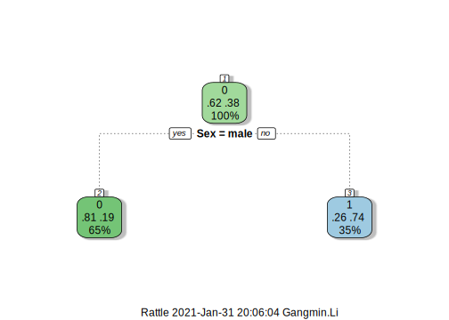
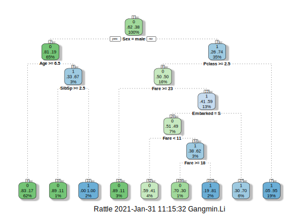

1.1 Build a decision tree in Hunt’s Algorithm
Hunt’s algorithm builds a decision tree in a recursive fashion by partitioning the training dataset into successively purer subsets. Hunt’s algorithm takes three input values:
- A training dataset, \(D\) with a number of attributes,
- A subset of attributes \(Att_{list}\) and its testing criterion together to form a test condition, such as
'age>=25'is a test condition, where,'age'is the attribute and'>=25'is the test criterion. - A
Attribute_selection_method, it refers a procedure to determine the best splitting.
The general recursive procedure is defined as below [@Tan2005]:
- Create a node \(N\), suppose the training dataset when reach to note \(N\) is \(D_{N}\). Initially, \(D_{N}\) is the entire training set \(D\). Do the following:
- If \(D_{t}\) contains records that belong the same class \(y_{t}\), then \(t\) is a leaf node labeled as \(y_{t}\);
- If \(D_{t}\) is not empty set but \(Att_{list}\) is empty, (there is no more test attributes left untested), then \(t\) is a leaf node labeled by the the label of the majority records in the dataset;
- If \(D_{t}\) contains records that belong to more than one class and \(Att_{list}\) is not empty, use
Attribute_selection_methodto choose next best attribute from the \(Att_{list}\) and remove that list from \(Att_{list}\). use the attribute and its condition as next test condition. 5. Repeat steps 2,3 and 4 until all the records in the subset belong to the same class.
1.1.1 How to Determine the Best Split Condition?
The method used to define the best split makes different decision tree algorithms. There are many measures that can be used to determine the best way to split the records. These measures are defined in terms of the class distribution of the records before and after splitting. The best splitting is the one that has more purity after the splitting. If we were to split \(D\) into smaller partitions according to the outcomes of the splitting criterion, ideally each partition after splitting would be pure (i.e., all the records that fall into a given partition would belong to the same class). Instead of define a split’s purity the impurity of its child node is used. There are a number of commonly used impurity measurements: Entropy, Gini Index and Classification Error.
Entropy: measures the degree of uncertainty, impurity, or disorder. The formula for calculate entropy is as shown below:
\[\begin{equation} E(x)= ∑_{i=1}^{n}p_ilog_2(p_i), \tag{1.1} \end{equation}\]
Where \(p\) represents the probability, and \(E(x)\) represents the entropy.
Gini Index: also called Gini impurity, measures the degree of probability of a particular variable being incorrectly classified when it is chosen randomly. The degree of the Gini index varies between zero and one, where zero denotes that all elements belong to a certain class or only one class exists, and one denotes that the elements are randomly distributed across various classes. A Gini index of 0.5 denotes equally distributed elements into some classes.
The formula used to calculate Gini index is shown below:
\[\begin{equation} GINI(x) = 1- ∑_{i=1}^{n}p_i^2, \tag{1.2} \end{equation}\]
Where \(p_i\) is the probability of an object being classified to a particular class.
Classification Error measures the misclassified class labels. It is calculated with the formula shows below: \[\begin{equation} Classification error(x)= 1 - max_{i}p_i. \tag{1.3} \end{equation}\]
Among these three impurity measurements, Gini is Used by the CART (classification and regression tree) algorithm for classification trees, and Entropy is Used by the ID3, C4.5 and C5.0 tree-generation algorithms.
With above explanation we can now say that the aims of a decision tree algorithm is to reduce Entropy level from the root to the leaves and the best tree is the one that takes order from the most to the least in reducing Entropy level. The good news is that we do not need to calculate impurity of each test condition to build a decision tree. The most tools have the tree construction built in already. But it is still important to understand the algorithms.
1.1.2 The Simplest Decision Tree for Titanic
In the Titanic problem, Let’s take a quick review of the possible attributes we could use. Previously we understand that apart from the PassengerID, Passenger Name (passenger name has been re-engineered into titles), all other attributes can all be used to predict a passenger’s death or survival since they all have some power of prediction.
Let us consider a simple decision tree firstly.
The simplest decision tree perhaps is the one only has one test condition and two possible outcomes. In terms of a tree, we called it one internal node and two branches. There are only one attribute meet with the requirements. That is Sex, so our decision tree will be build only base on passenger’s gender.
We need a number of libraries to make our code works.
library(rpart)
# build our first model. we only use Sex attribute, check help on rpart,
# this model only takes Sex as predictor and Survived as the consequencer
train <- read.csv("train.csv", header = TRUE)
test <- read.csv("test.csv", header = TRUE)
model <- rpart(Survived ~ Sex, data = train,
method="class")Simple! isn’t it? There are only three lines of code. you can see we have the first two lines to build two variables ‘train’ and ‘test’ to hold our training dataset and testing dataset. The model is simple a function invocation, the function is called ‘rpart’.
R function did the job for us so we do not need go through the model construction phase to build our classifier. The decision tree has been already built. Now we can test our model by making predictions on the test dataset. For Kaggle competition, you can produce the first prediction and can submit to Kaggle (of course the prediction is not very good in terms of accuracy since the simplicity of the model).
# The firs prediction produced by the first decision tree which only used one predictor Sex
Prediction <- predict(model, test, type = "class")Our prediction is produced. If we want to submit to Kaggle, we can convert it into Kaggle required format and save it into a file called “myFirstResult.CSV”. Here, the importance is knowing the procedure.
# produce a submit with Kaggle required format that is only two attributes: PassengerId and Survived
submit <- data.frame(PassengerId = test$PassengerId, Survived = Prediction)
# Wrtie it into a file "myFirstResult.CSV"
write.csv(submit, file = "myFirstResult.CSV", row.names = FALSE)Once we submit this result to Kaggle. Kaggle will make your results and provide a feedback. That is a good way to know how good the model performed. The Kaggle feedback tells us we have got 76.555% accurate! That is not too bad, isn’t it?
Let us have a brief check on our prediction.
## 0 1
## 266 152##
## 0 1
## 0.6363636 0.3636364The result shows that among total of 418 passenger in the test dataset, 266 passenger predicted perished (with survived value 0), which counts as 63.63 percent and 152 passenger predicted to be survived (with survived value 1) and which count as 36.36 percent.
We know that our model only had one test condition which is Sex. From the train dataset we knew that the gender ratio was very similar to this number.
# add Sex back to the submit and form a new data frame called compare
compare <- data.frame(submit[1], Sex = test$Sex, submit[2])
# Check train sex and Survived ratios
prop.table(table(train$Sex, train$Survived), 1)##
## 0 1
## female 0.2579618 0.7420382
## male 0.8110919 0.1889081##
## female male
## 0.3636364 0.6363636##
## 0 1
## female 0 1
## male 1 0It is clear that our model is too simple: it predict any male will be perished and every female will be survived! This is approved by the male and female ratio in the test dataset is identical to the death ratio in our prediction result.
Further, our predicted results’ survival ratio on sex is male 0% and female is 100%. It make sense, isn’t it? since our model was trained using training dataset. The gender survive ratio were male only 18.89 and the death rate was 81%. Similarly, Female survival rate was 74.2 percent and death only has 25.79 percent.
Any prediction model will have to go for majority. But, you are not satisfied with this model, aren’t you? You will not happy with the model only looking into sex of given dataset and predict a passenger’s fate with gender!
This is only the starting, we can improve on it, a lot.
R has provided many useful library for classification, we can make use of them and improve our classifier. The first thing is that we want see our model (tree) and have a sense of the results produced, rather than simple call a function and produce a result. R has a lot of functions to help too.
plot is a visual tool we can use to visual our model.

This graph is pretty and informative. The first box top number is the voting (either 0 - dead or 1-survived). The two percentages shows the value of the spliting (also called voting or confidence). The final number on each node shows the percent of population which resides in this node. Also the color of nodes signify the two classes here. For example, the root node, “0” (death) shows the way root node is voting; “.62” and “.38” represents the proportion of those who die and those who survive; 100% implies that the entire population resides in root node.
1.1.3 The Most Complecated Decision Tree for Titanic
Let us try another extreme, we use all the attributes without selection or discrimination, which knowing from the understanding data that have some prediction power and not too many levels (possibilities). Among of attributes, we choose Pclass, Sex, Age,,SibSp, Parch, Fare, Cabin and Embarked. We somehow escape Name and Ticket, which we believe that they not really have any power of prediction.
# The full-house classifier apart from name and ticket
model <- rpart(Survived ~ Pclass + Sex + Age + SibSp + Parch + Fare + Embarked,
data=train,
method="class")
Prediction <- predict(model, test, type = "class")
submit <- data.frame(PassengerId = test$PassengerId, Survived = Prediction)
write.csv(submit, file = "myFullhouseResult.CSV", row.names = FALSE)You have produced a new prediction. We can aslo submit our result to Kaggle website for second evaluation.
This time, we can see the score has been increased to something like 0.77511.
Let us examine our classifier again by plot it in a graph.

The above decision tree appeared much complicated than the first one and it goes a lot deeper than what we saw last time. Note that the both trees are binary trees (have two branches). For test conditions that more than two possible answers have been changed to a binary by auto add a split with them. For example, age are numbers and have 10s of possibilities, our model simply split it by a test condition "Age >= 6.5". Conditions have been automatically set for others attributes as well such as "Pclass >= 2.5", "SibSp>=2.5", and "Fare >= 18", etc.
This conditions are not ideal, they can be changed if you know how to optimize decision tree. For the moment it looks very promising that resonates with the famous naval law that “women and kids first” is visible in our model.
If you want look into the difference between our two predictions, you can do,
# build a comparison data frame to record each prediction results
compare <- data.frame(submit[1], predict1 = compare$Survived , predict2 = Prediction)
# Find differences
dif <- compare[compare[2] != compare[3], ]
#show dif
dif## PassengerId predict1 predict2
## 2 893 1 0
## 19 910 1 0
## 33 924 1 0
## 34 925 1 0
## 37 928 1 0
## 38 929 1 0
## 73 964 1 0
## 81 972 0 1
## 88 979 1 0
## 90 981 0 1
## 99 990 1 0
## 133 1024 1 0
## 139 1030 1 0
## 141 1032 1 0
## 158 1049 1 0
## 166 1057 1 0
## 170 1061 1 0
## 189 1080 1 0
## 197 1088 0 1
## 198 1089 1 0
## 200 1091 1 0
## 202 1093 0 1
## 215 1106 1 0
## 269 1160 1 0
## 281 1172 1 0
## 282 1173 0 1
## 285 1176 1 0
## 308 1199 0 1
## 346 1237 1 0
## 355 1246 1 0
## 366 1257 1 0
## 368 1259 1 0
## 377 1268 1 0
## 413 1304 1 0We can see the second classifier have produced 34 different predictions in comparison with the first classifier. That is a great improvement.
1.1.4 The Rational Decision tree for Titanic
Now let us use our re-engineered train dataset to train our classifier to see how could we improve our prediction results.